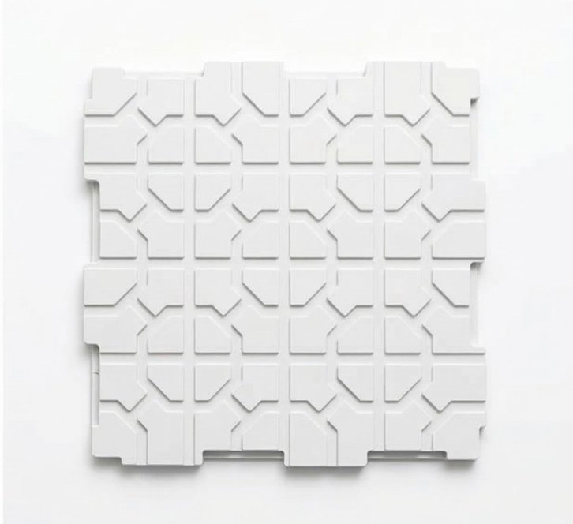
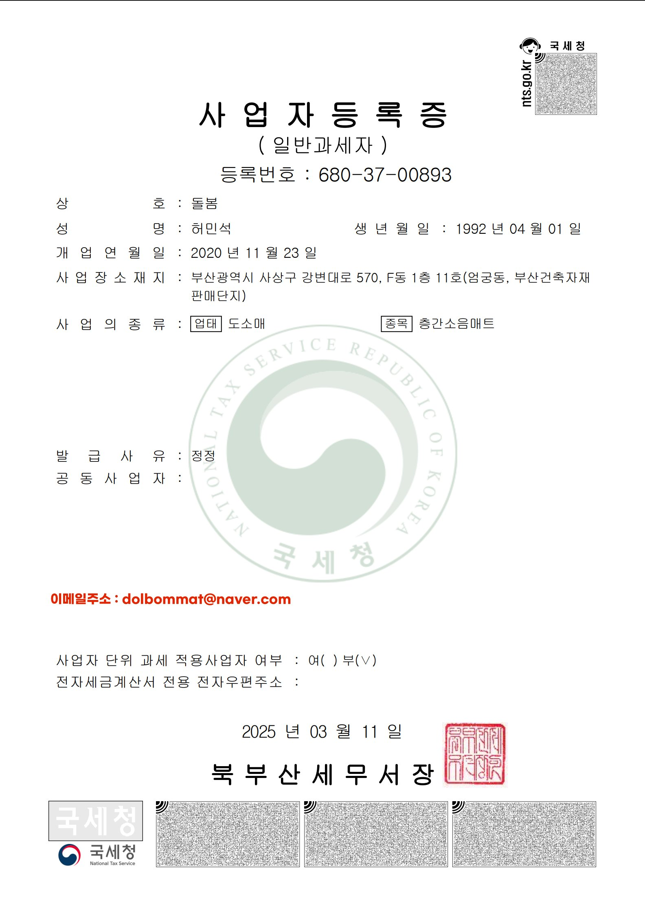
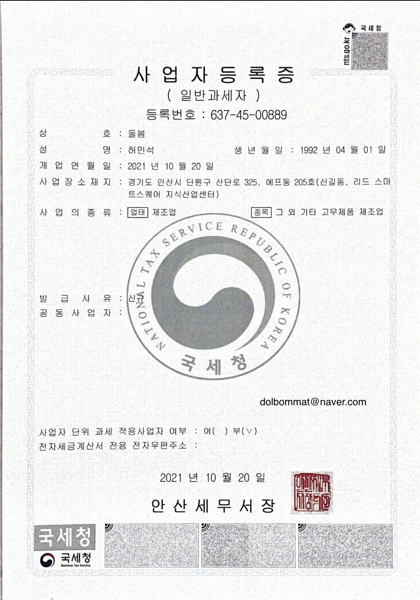
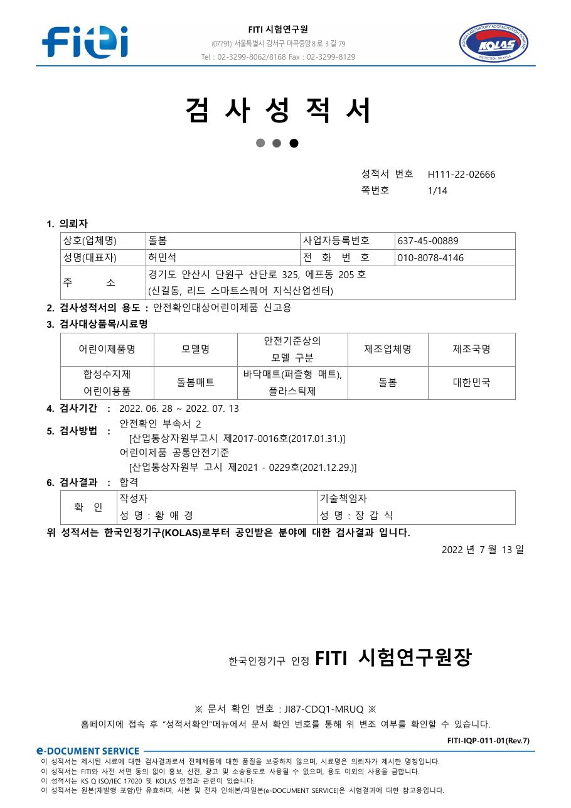
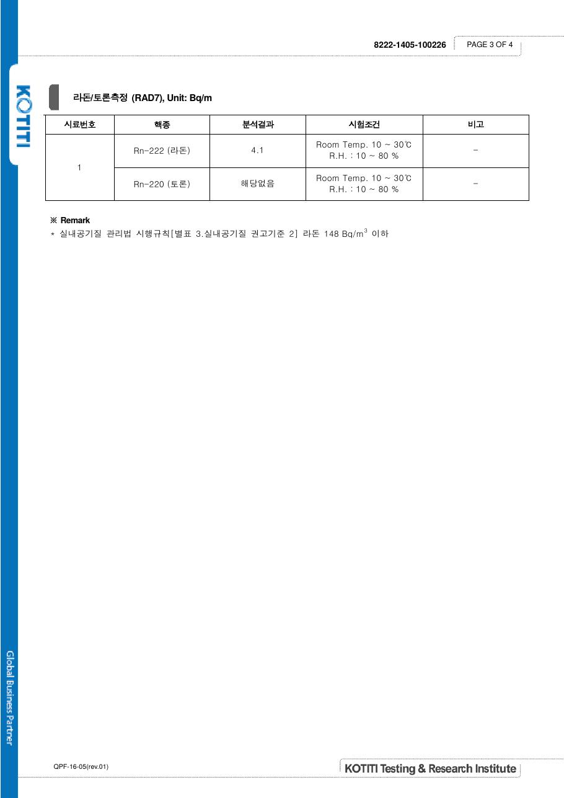
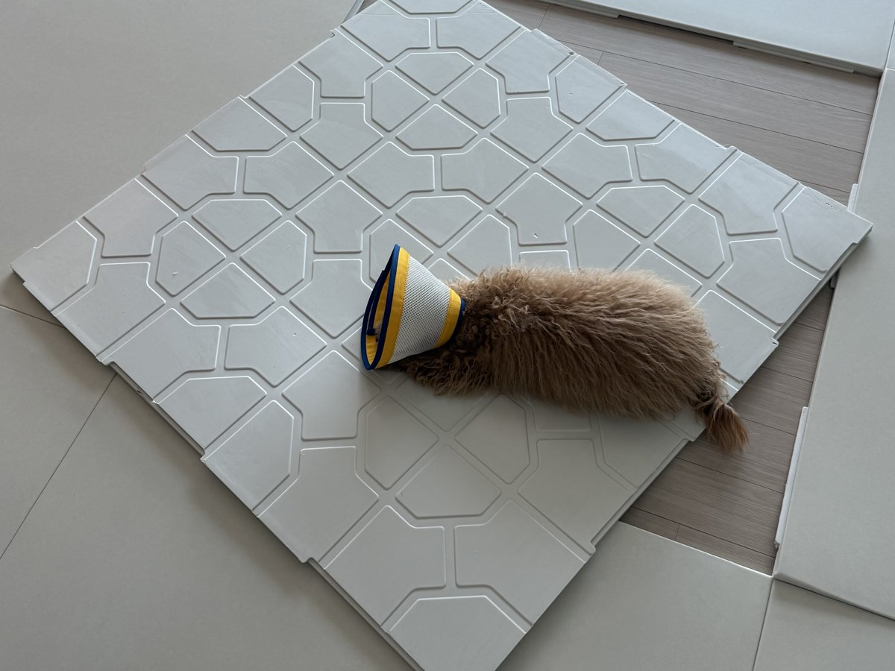
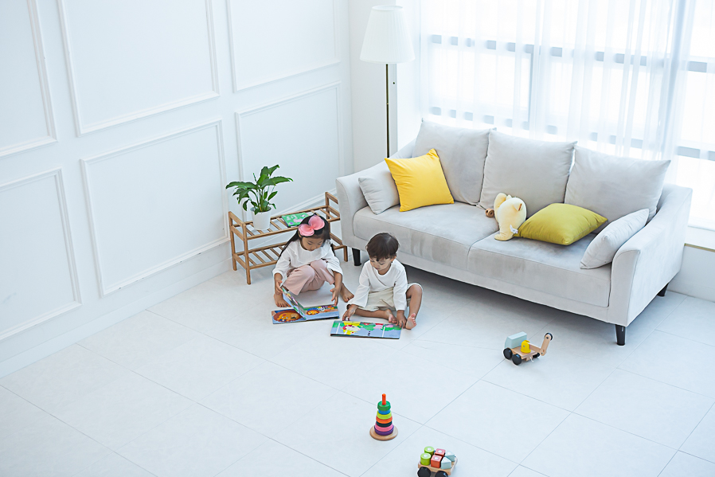

매트 깔면,
바닥 걱정
안 되세요?
매트 밑에 습기 차고 곰팡이 생길까 걱정되시죠.
돌봄매트는 매트 밑으로 공기가 흐릅니다.
매트 밑 바닥도
숨 쉬어야 합니다
바닥에 공기가 통하지 않으면 습기가 차고, 곰팡이 걱정으로 이어집니다. 돌봄매트는 매트 뒷면의 공기순환 구조로 이 걱정을 줄여줍니다.

나중에 떼어낼 때도
생각해야 합니다
돌봄매트는 제거가 쉬운 3M 마스킹 테이프를 먼저 붙이고,
그 위에 3M 폼테이프로 벽이 없는 부분만 고정합니다.
거실 중간은 바닥에 부착하지 않아, 나중에 떼어낼 때 손쉽게 제거할 수 있습니다.
오래 함께할 수 있는
회사인지
매트는 한 번 깔면 몇 년을 사용합니다. 시공 이후 AS와 문의까지 생각하면, 갑자기 사라지지 않고 오래 운영해온 회사를 선택하는 것이 안전합니다.


시공 이후에도 책임지고 있습니다.
아이가 매일 누울 바닥,
안전해야 합니다
돌봄매트는 어린이제품 안전 기준 검사를 통과했습니다. 유해물질은 검출되지 않았고, 라돈 수치도 기준보다 훨씬 낮습니다.


이제, 후회 없는 선택을 위한
9가지 기준
어떤 브랜드를 고르시든 도움이 되도록, 시공 전 꼭 확인하실 기준을 정리했습니다.
기준 01 비싸야 더 좋은 매트일까요?
가격이 높다고 무조건 더 검증된 매트는 아닙니다.
일부 브랜드는 높은 가격을 근거로 "고급"과 "프리미엄"을 이야기합니다.
하지만 정말 중요한 건 얼마나 비싼가가 아니라, 어디에서 선택받았는가입니다.
키즈라운지
어린이집
시공 완료
좋은 제품을 합리적인 가격으로 본사에서 직접 시공합니다.
기준 02 청소와 관리는 어렵지 않을까요?
시공매트는 하루 보고 결정하지만, 실제 사용은 몇 년간 이어집니다.
일상 관리
로봇청소기와 일반 청소기 모두 문제없이 사용 가능하고, 매트 90%를 덮는 커넥트 구조로 이물질이 바닥으로 들어가지 않게 막아줍니다.
장기 사용
공기 순환 구조와 바닥 습기 관리, 시공 범위 선택까지 함께 살펴봐야 오래 만족합니다.
- 아이와 반려견이 매일 머무는 바닥일수록 관리 편의성은 중요합니다.
기준 03 층간소음, 정말 잡힐까요?
시공매트를 알아보시는 분들이 가장 많이 고민하는 부분입니다.
왜 시공매트를 찾게 될까요
아이가 뛰거나 의자를 끄는 소리,
발망치 소리에서 시작되는 아랫집과의 작은 트러블이 가장 큰 동기입니다.
어디까지 잡을 수 있나요
거실·복도·주방 빈틈 없이 차단합니다. 아이들이 가볍게 뛰는 정도, 발망치는 충분히 잡을 수 있습니다.
아이 안전과 반려견의 미끄럼방지를 생각하면 17T도 좋은 선택입니다.
기준 04 폴더매트로 충분할까요, 시공매트로 가야 할까요?
아이와 반려견의 활동 반경은 생각보다 빠르게 넓어집니다.
처음에는 이렇게 생각합니다
"거실 한쪽만 깔면 되지 않을까?"
"일단 폴더매트로 시작해볼까?"
시간이 지나면 달라집니다
기고, 걷고, 뛰기 시작하면 복도와 주방까지 생활 동선 전체가 매트 고민의 대상이 됩니다.
- 매트가 없는 곳에서 넘어지는 일이 생깁니다.
- 거실만 덮어서는 층간소음 걱정이 완전히 사라지지 않습니다.
- 반려견이 거실 어디에서 놀든 미끄러지지 않도록 사각지대 없이 시공됩니다.
- 집 전체가 자연스럽게 이어지는 인테리어를 원하게 됩니다.
아이의 활동 반경이
생각보다 빨리 넓어집니다.
기준 05 매트 사이 틈과 마감, 정말 깔끔할까요?
사진으로는 비슷해 보여도, 매일 생활할수록 차이가 체감됩니다.

비교할 때 꼭 볼 점
이음선이 과하게 많지 않은지, 벽면과 모서리가 자연스럽게 마감되는지 확인해보세요.
돌봄매트가 강조하는 기준
넓은 매트 구성과 꼼꼼한 본사 직접 시공으로 집 전체가 한 공간처럼 이어지는 느낌을 지향합니다.
기준 06 1M와 500mm, 어떤 사이즈가 맞을까요?
사이즈는 시공 마감과 가격, 관리 편의성을 동시에 좌우합니다.
바닥이 달라집니다.
500mm 매트의 장점
합리적인 가격에 시작할 수 있고, 일부가 오염되거나 손상되면 그 부분만 부분 교체가 가능해 관리 부담이 적습니다.
1M 매트의 장점
이음새가 훨씬 적어 매트 사이 틈이 덜하고, 시공 후 바닥재처럼 깔끔한 마감을 만들어 인테리어 효과가 좋습니다.
가격과 부분 교체 편의성을 우선시한다면 500mm가 좋은 선택입니다.
기준 07 거실 분위기와 잘 어울릴까요?
실제 후기에서 만족도가 높은 포인트 중 하나가 '집 분위기와 잘 어울리는지'입니다.

색상이 만드는 차이
너무 하얗기만 한 매트는 때가 쉽게 보이고, 너무 어두우면 거실이 답답해 보입니다. 은은한 톤이 가장 무난합니다.
공간감
큰 사이즈로 시공한 매트는 거실을 더 넓어 보이게 합니다. 작은 매트가 여러 장 이어진 것보다 자연스럽습니다.
가구·벽지와의 색감을 확인해보세요.
기준 08 업체의 지속성은 어떨까요?
몇 년 뒤에도 믿고 연락할 수 있는 회사인지가 중요합니다.
기준 09 우리 집은 몇 장이 필요할까요?
같은 평형이라도 구조와 시공 범위에 따라 수량은 달라집니다.
우리 집에 얼마가 나오는지 안내드리겠습니다!